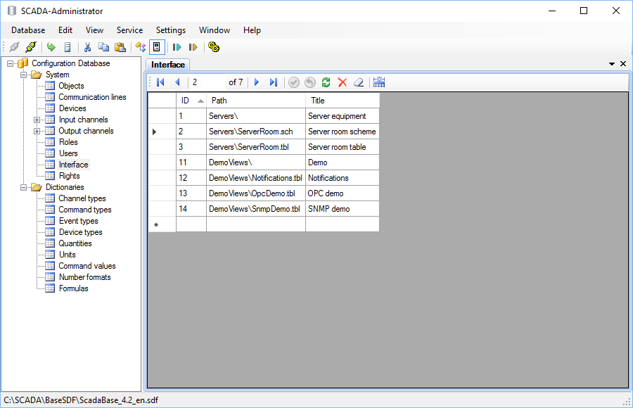

button, restart the Server service by the
button, restart the Server service by the  button, then logout and login again the web application.
button, then logout and login again the web application.View is a form of data representation in the Webstation application. There are 2 types of views supported by default: table views and schemes. Support other types of views can be added by installing additional plugins.
Special editors are designed to create views: Table Editor and Scheme editor. Views are stored in files which must be located in the interface directory (or its subdirectory) that is specified in the settings of the Server application. The default interface directory is C:\SCADA\Interface\
Examples of view files:
C:\SCADA\Interface\Servers\ServerRoom.sch - scheme,
C:\SCADA\Interface\Servers\ServerRoom.tbl - table view.
When view files are created, they must be defined in the Interface table of the configuration database by the Administrator application as shown in Figure 1. View ID is an arbitrary unique number. View path is relative to the interface directory. View title is shown in the explorer tree of Webstation.

Figure 1. Editing the Interface table
To apply the changes, send the database to Server by the button, restart the Server service by the button, then logout and login again the web application.